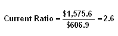
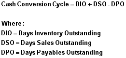

The first ratios we'll take a look at in this tutorial are the liquidity ratios. Liquidity ratios attempt to measure a company's ability to pay off its short-term debt obligations. This is done by comparing a company's most liquid assets (or, those that can be easily converted to cash), its short-term liabilities.
In general, the greater the coverage of liquid assets to short-term liabilities the better as it is a clear signal that a company can pay its debts that are coming due in the near future and still fund its ongoing operations. On the other hand, a company with a low coverage rate should raise a red flag for investors as it may be a sign that the company will have difficulty meeting running its operations, as well as meeting its obligations.
The biggest difference between each ratio is the type of assets used in the calculation. While each ratio includes current assets, the more conservative ratios will exclude some current assets as they aren't as easily converted to cash.
The ratios that we'll look at are the current, quick and cash ratios and we will also go over the cash conversion cycle, which goes into how the company turns its inventory into cash.
To find the data used in the examples in this section, please see the Securities and Exchange Commission's website to view the 2005 Annual Statement of Zimmer Holdings.
The current ratio is a popular financial ratio used to test a company's liquidity (also referred to as its current or working capital position) by deriving the proportion of current assets available to cover current liabilities.
The concept behind this ratio is to ascertain whether a company's short-term assets (cash, cash equivalents, marketable securities, receivables and inventory) are readily available to pay off its short-term liabilities (notes payable, current portion of term debt, payables, accrued expenses and taxes). In theory, the higher the current ratio, the better.
Formula:
Components:
As of December 31, 2005, with amounts expressed in millions, Zimmer Holdings' current assets amounted to $1,575.60 (balance sheet), which is the numerator; while current liabilities amounted to $606.90 (balance sheet), which is the denominator. By dividing, the equation gives us a current ratio of 2.6.
Variations:
None
Commentary:
The current ratio is used extensively in financial reporting. However, while easy to understand, it can be misleading in both a positive and negative sense - i.e., a high current ratio is not necessarily good, and a low current ratio is not necessarily bad (see chart below).
Here's why: Contrary to popular perception, the ubiquitous current ratio, as an indicator of liquidity, is flawed because it's conceptually based on the liquidation of all of a company's current assets to meet all of its current liabilities. In reality, this is not likely to occur. Investors have to look at a company as a going concern. It's the time it takes to convert a company's working capital assets into cash to pay its current obligations that is the key to its liquidity. In a word, the current ratio can be "misleading."
A simplistic, but accurate, comparison of two companies' current position will illustrate the weakness of relying on the current ratio or a working capital number (current assets minus current liabilities) as a sole indicator of liquidity:
| -- | Company ABC | Company XYZ |
| Current Assets | $600 | $300 |
| Current Liabilities | $300 | $300 |
| Working Capital | $300 | $0 |
| Current Ratio | 2.0 | 1.0 |
Company ABC looks like an easy winner in a liquidity contest. It has an ample margin of current assets over current liabilities, a seemingly good current ratio, and working capital of $300. Company XYZ has no current asset/liability margin of safety, a weak current ratio, and no working capital.
However, to prove the point, what if: (1) both companies' current liabilities have an average payment period of 30 days; (2) Company ABC needs six months (180 days) to collect its account receivables, and its inventory turns over just once a year (365 days); and (3) Company XYZ is paid cash by its customers, and its inventory turns over 24 times a year (every 15 days).
In this contrived example, Company ABC is very illiquid and would not be able to operate under the conditions described. Its bills are coming due faster than its generation of cash. You can't pay bills with working capital; you pay bills with cash! Company's XYZ's seemingly tight current position is, in effect, much more liquid because of its quicker cash conversion.
When looking at the current ratio, it is important that a company's current assets can cover its current liabilities; however, investors should be aware that this is not the whole story on company liquidity. Try to understand the types of current assets the company has and how quickly these can be converted into cash to meet current liabilities. This important perspective can be seen through the cash conversion cycle (read the chapter on CCC now). By digging deeper into the current assets, you will gain a greater understanding of a company's true liquidity.
The quick ratio - aka the quick assets ratio or the acid-test ratio - is a liquidity indicator that further refines the current ratio by measuring the amount of the most liquid current assets there are to cover current liabilities. The quick ratio is more conservative than the current ratio because it excludes inventory and other current assets, which are more difficult to turn into cash. Therefore, a higher ratio means a more liquid current position.
Formula:
Components:
As of December 31, 2005, with amounts expressed in millions, Zimmer Holdings' quick assets amounted to $756.40 (balance sheet); while current liabilities amounted to $606.90 (balance sheet). By dividing, the equation gives us a quick ratio of 1.3.
Variations:
Some presentations of the quick ratio calculate quick assets (the formula's numerator) by simply subtracting the inventory figure from the total current assets figure. The assumption is that by excluding relatively less-liquid (harder to turn into cash) inventory, the remaining current assets are all of the more-liquid variety. Generally, this is close to the truth, but not always.
Zimmer Holdings is a good example of what can happen if you take the aforementioned "inventory shortcut" to calculating the quick ratio:
Standard Approach: $233.2 plus $524.2 = $756 ÷ $606.9 =1.3
Shortcut Approach: $1,575.6 minus $583.7 = $991.9 ÷ $606.9 = 1.6
Restricted cash, prepaid expenses and deferred income taxes do not pass the test of truly liquid assets. Thus, using the shortcut approach artificially overstates Zimmer Holdings' more liquid assets and inflates its quick ratio.
Commentary:
As previously mentioned, the quick ratio is a more conservative measure of liquidity than the current ratio as it removes inventory from the current assets used in the ratio's formula. By excluding inventory, the quick ratio focuses on the more-liquid assets of a company.
The basics and use of this ratio are similar to the current ratio in that it gives users an idea of the ability of a company to meet its short-term liabilities with its short-term assets. Another beneficial use is to compare the quick ratio with the current ratio. If the current ratio is significantly higher, it is a clear indication that the company's current assets are dependent on inventory.
While considered more stringent than the current ratio, the quick ratio, because of its accounts receivable component, suffers from the same deficiencies as the current ratio - albeit somewhat less. To understand these "deficiencies", readers should refer to the commentary section of the Current Ratio chapter. In brief, both the quick and the current ratios assume a liquidation of accounts receivable and inventory as the basis for measuring liquidity.
While theoretically feasible, as a going concern a company must focus on the time it takes to convert its working capital assets to cash - that is the true measure of liquidity. Thus, if accounts receivable, as a component of the quick ratio, have, let's say, a conversion time of several months rather than several days, the "quickness" attribute of this ratio is questionable.
Investors need to be aware that the conventional wisdom regarding both the current and quick ratios as indicators of a company's liquidity can be misleading.
The cash ratio is an indicator of a company's liquidity that further refines both the current ratio and the quick ratio by measuring the amount of cash, cash equivalents or invested funds there are in current assets to cover current liabilities.
Formula:
Components:
As of December 31, 2005, with amounts expressed in millions, Zimmer Holdings' cash assets amounted to $233.20 (balance sheet); while current liabilities amounted to $606.90 (balance sheet). By dividing, the equation gives us a cash ratio of 0.4
Variations:
None
Commentary:
The cash ratio is the most stringent and conservative of the three short-term liquidity ratios (current, quick and cash). It only looks at the most liquid short-term assets of the company, which are those that can be most easily used to pay off current obligations. It also ignores inventory and receivables, as there are no assurances that these two accounts can be converted to cash in a timely matter to meet current liabilities.
Very few companies will have enough cash and cash equivalents to fully cover current liabilities, which isn't necessarily a bad thing, so don't focus on this ratio being above 1:1.
The cash ratio is seldom used in financial reporting or by analysts in the fundamental analysis of a company. It is not realistic for a company to purposefully maintain high levels of cash assets to cover current liabilities. The reason being that it's often seen as poor asset utilization for a company to hold large amounts of cash on its balance sheet, as this money could be returned to shareholders or used elsewhere to generate higher returns. While providing an interesting liquidity perspective, the usefulness of this ratio is limited.
This liquidity metric expresses the length of time (in days) that a company uses to sell inventory, collect receivables and pay its accounts payable. The cash conversion cycle (CCC) measures the number of days a company's cash is tied up in the the production and sales process of its operations and the benefit it gets from payment terms from its creditors. The shorter this cycle, the more liquid the company's working capital position is. The CCC is also known as the "cash" or "operating" cycle.
Formula:
Components:
DIO is computed by:
| (1) cost of sales per day | 739.4 ÷ 365 = 2.0 |
| (2) average inventory 2005 | 536.0 + 583.7 = 1,119.7 ÷ 2 = 559.9 |
| (3) days inventory outstanding | 559.9 ÷ 2.0 = 279.9 |
DIO gives a measure of the number of days it takes for the company's inventory to turn over, i.e., to be converted to sales, either as cash or accounts receivable.
DSO is computed by:
| (1) net sales per day | 3,286.1 ÷ 365 = 9.0 |
| (2) average accounts receivable | 524.8 + 524.2 = 1,049 ÷ 2 = 524.5 |
| (3) days sales outstanding | 524.5 ÷ 9.0 = 58.3 |
DSO gives a measure of the number of days it takes a company to collect on sales that go into accounts receivables (credit purchases).
DPO is computed by:
| (1) cost of sales per day | 739.4 ÷ 365 = 2.0 |
| (2) average accounts payable | 131.6 + 123.6 = 255.2 ÷ 125.6 |
| (3) days payable outstanding | 125.6 ÷ 2.0 = 63 |
DPO gives a measure of how long it takes the company to pay its obligations to suppliers.
CCC computed:
Zimmer's cash conversion cycle for FY 2005 would be computed with these numbers (rounded):
| DIO | 280 days |
| DSO | +58 days |
| DPO | -63 days |
| CCC | 275 days |
Commentary:
An often-overlooked metric, the cash conversion cycle is vital for two reasons. First, it's an indicator of the company's efficiency in managing its important working capital assets; second, it provides a clear view of a company's ability to pay off its current liabilities.
It does this by looking at how quickly the company turns its inventory into sales, and its sales into cash, which is then used to pay its suppliers for goods and services. Again, while the quick and current ratios are more often mentioned in financial reporting, investors would be well advised to measure true liquidity by paying attention to a company's cash conversion cycle.
The longer the duration of inventory on hand and of the collection of receivables, coupled with a shorter duration for payments to a company's suppliers, means that cash is being tied up in inventory and receivables and used more quickly in paying off trade payables. If this circumstance becomes a trend, it will reduce, or squeeze, a company's cash availabilities. Conversely, a positive trend in the cash conversion cycle will add to a company's liquidity.
By tracking the individual components of the CCC (as well as the CCC as a whole), an investor is able to discern positive and negative trends in a company's all-important working capital assets and liabilities.
For example, an increasing trend in DIO could mean decreasing demand for a company's products. Decreasing DSO could indicate an increasingly competitive product, which allows a company to tighten its buyers' payment terms.
As a whole, a shorter CCC means greater liquidity, which translates into less of a need to borrow, more opportunity to realize price discounts with cash purchases for raw materials, and an increased capacity to fund the expansion of the business into new product lines and markets. Conversely, a longer CCC increases a company's cash needs and negates all the positive liquidity qualities just mentioned.
Note: In the realm of free or low-cost investment research websites, the only one we've found that provides complete CCC data for stocks is Morningstar, which also requires a paid premier membership subscription.
Current Ratio Vs. The CCC
The obvious limitations of the current ratio as an indicator of true liquidity clearly establish a strong case for greater recognition, and use, of the cash conversion cycle in any analysis of a company's working capital position.
Nevertheless, corporate financial reporting, investment literature and investment research services seem to be stuck on using the current ratio as an indicator of liquidity. This circumstance is similar to the financial media's and the general public's attachment to the Dow Jones Industrial Average. Most investment professionals see this index as unrepresentative of the stock market or the national economy. And yet, the popular Dow marches on as the market indicator of choice.
The current ratio seems to occupy a similar position with the investment community regarding financial ratios that measure liquidity. However, it will probably work better for investors to pay more attention to the cash-cycle concept as a more accurate and meaningful measurement of a company's liquidity.
Proceed to the next chapter on Profitability Indicator Ratios here.
Or, click here to return to the Financial Ratio Tutorial main menu.
{kind=link}
{kind=link}
{kind=link}
{kind=link}
{kind=link}
{kind=link}
{kind=link}